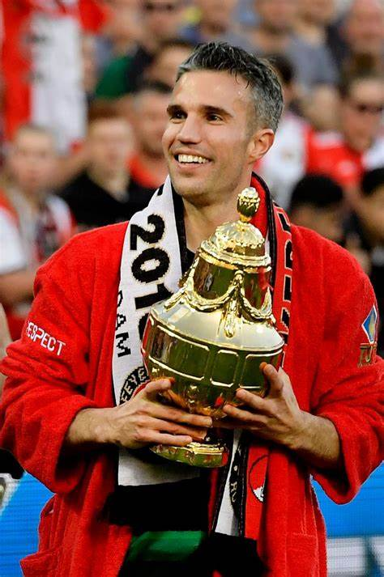
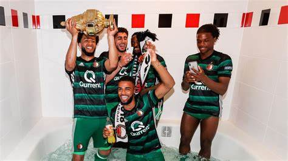
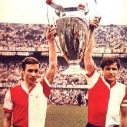
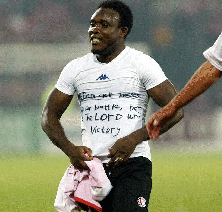

Gewonnen prijzen
 Na acht jaar zonder prijs werd op 24 april 2016 beslag gelegd op de twaalfde KNVB Beker in de clubhistorie. In de Eredivisie behaalde Feyenoord de derde plek, ver achter Ajax en kampioen PSV. Gedurende de volgende transfermarkt deed Feyenoord goede zaken. Contracten van basisspelers als Dirk Kuijt en Eljero Elia werden verlengd en verder werd Nicolai Jørgensen voor ongeveer €3.500.000,- overgenomen van FC Kopenhagen, terwijl Brad Jones transfervrij werd aangetrokken van N.E.C. als vervanger van de geblesseerde doelman Kenneth Vermeer.
Op 6 november verloor een gehavend elftal voor het eerst dat seizoen in de Eredivisie; degradatiekandidaat Go Ahead Eagles was door een doelpunt van Jarchinio Antonia met 1-0 te sterk in Deventer. Europees liep het die periode niet en na nederlagen tegen Manchester United (4-0) en Fenerbahçe (0-1) liep voor Feyenoord het Europees avontuur ten einde. In de Eredivisie werden tussendoor grote zeges geboekt, zoals de 6-1 overwinning tegen Sparta en 0-4 tegen AZ. Met een voorsprong van vijf punten op nummer twee Ajax ging Feyenoord als koploper de winterstop in.
De tweede seizoenshelft begon Feyenoord sterk. De eerste zeven competitiewedstrijden van 2017 werden gewonnen door Feyenoord. In Arnhem werd wel verloren van Vitesse in het toernooi om de KNVB beker (2-0). Ook werd PSV thuis door een rommelig eigen doelpunt van PSV-keeper Jeroen Zoet met 2-1 verslagen. Op 5 maart was Sparta de eerste ploeg die Feyenoord na de winterstop in de Eredivisie wist te verslaan. Door een vroeg doelpunt van Mathias Pogba won Sparta met 1-0. Feyenoord richtte zich echter snel weer op. Er werd wederom ruim gewonnen van AZ (5-2) en een week later werd in en tegen Heerenveen met 1-2 gewonnen.
Vervolgens stond de Klassieker op het programma. Na een vroeg doelpunt won Ajax uiteindelijk met 2-1. In de doordeweekse speelronde op 5 april 2017 werd Go Ahead Eagles met een 8-0 nederlaag terug naar Deventer gestuurd. Echter, door een gelijkspel tegen PEC Zwolle was de voorsprong op Ajax geslonken tot op één punt. Na twee overwinningen op rij van Feyenoord en een nederlaag van achtervolger Ajax tegen PSV was de voorsprong met nog twee wedstrijden te gaan weer vier punten.
Op de voorlaatste speeldag van de Eredivisie kon Feyenoord op bezoek bij stadsgenoot Excelsior kampioen worden, maar er werd met 3-0 verloren. Een week later op de laatste speeldag werd de ploeg alsnog kampioen door met 3-1 te winnen van Heracles Almelo. De drie goals van Feyenoord werden gemaakt door aanvoerder Dirk Kuijt, die zijn laatste wedstrijd speelde en hiermee zijn carrière glansrijk afsloot.
Door het kampioenschap speelde de club ook de wedstrijd om de Johan Cruijff Schaal tegen bekerwinnaar Vitesse in de Kuip op 5 augustus 2017. Na negentig minuten, met een stand van 1-1, won Feyenoord de Johan Cruijff Schaal na een penaltyreeks. Echter de rest van het seizoen verliep teleurstellend. In de Champions League werd Feyenoord in de groepsfase met drie punten uitgeschakeld in een groep met Manchester City, Napoli en Shakhtar Donetsk. In de Eredivisie was Feyenoord al in januari kansloos voor de titel en eindigde het, ondanks de terugkeer van Robin van Persie, op plek vier met een flinke achterstand op kampioen PSV, nummer twee Ajax en nummer drie AZ.
Zo zie je maar dat Feyenoord extreem veel prijzen heeft gewonnen in het verleden en ook zeker een aantal waar je best trots op mag zijn als supporter. en mischien voegen ze er dit seizoen wel weer een landstitel of knvbbeker aan toe.